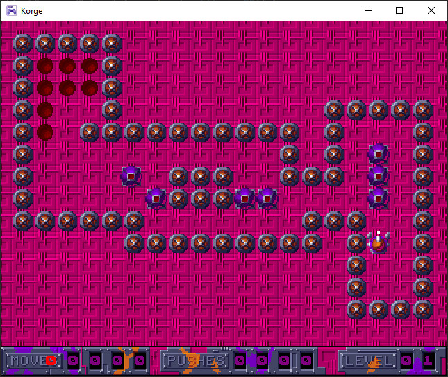

Having used Kotlin in a work project I shared with a friend @Corofides and thought it might be a useful thing to try building a game with this new found knowledge.
Having a love for the 🏷️movem game I persuaded them to help build yet another version of the game. I had all the assets and levels so it was just a matter of working out how to implement it in Korge, "Modern Multiplatform Game Engine for Kotlin."
We spent an evening every week or so learning the basics then made a start on building the game.
The intial goal was
Create a scene, create a player, allow movement in four cardinal directions, change images to reflect movement. Started adding a background. Restrict movement to 32, 32 grid based system for player, add in object that will be moveable in the future, add in view for detecting collisions with dense objects in front of player.

One thing that drew us to Korge was the fact we could create a cross platform app, one being a WASM or Web Assembly version which meant it could be deployed via GitHub Pages.
There is still some work to do for the collision detection and a tidy up of the code but the initial implementation of building a level from code and showing some stats is on it's way.
This also allowed us to learn how to create API/Test/Coverage reports for a Kotlin app. Alebit the tests need to be written! But the pipeline is there now to produce the outputs.